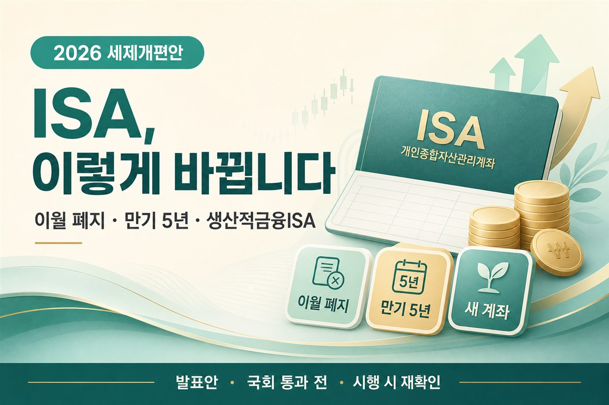

2026 세제개편, ISA 계좌 확 바뀐다 — 한도 이월 폐지·만기 5년·생산적금융ISA 신설 총정리
2026-08-03 발표안 기준 정리입니다. 국회 통과·시행 전에 달라질 수 있어요

들어가며 — 휴가 다녀왔더니 ISA가 달라졌다고?
잠깐 손 놓고 있다 뉴스만 훑어도 “ISA가 바뀐다”는 제목이 잔뜩 보입니다. 저처럼 월급 받아서 조금씩 넣어 두는 입장에선, 갑자기 한도·만기·새 계좌 이름이 쏟아지면 머리가 하얘지죠. 그래서 이번엔 발표된 세제개편안 기준으로, 월급쟁이 투자자가 지금 알아둘 변화만 초보 눈높이로 모아봤습니다.
먼저 톤을 분명히 해둘게요. 이건 2026년 8월 3일 발표된 세제개편안이고, 아직 국회 통과 전입니다. 관계부처 안내상 내년(2027년) 1월 시행 예정으로 거론되지만, 국회 논의 과정에서 달라질 수 있습니다. 아래 내용은 “발표됐다” 수준의 정리이며, 확정처럼 단정하지 않습니다.
먼저 읽어주세요
본 글은 정보 제공용입니다. 투자 권유·매수·매도 조언이 아니며, 법률·세무 자문도 아닙니다. 세부 요건·예외·시행 시점은 국회 통과와 공식령·금융기관 안내를 기준으로 시행 시점에 다시 확인하세요.
뭐가 바뀌었나 — 3줄 요약
납입한도 이월 폐지
일반 ISA 연 2천만원 한도의 미사용분 이월이 없어집니다. 기존 가입자에게도 적용. 총한도 1억원은 유지.
만기 최장 5년
일반 ISA 만기가 최소 3년 + 2년 연장, 최장 5년으로 제한됩니다. 예전처럼 무기한 연장은 어렵다는 방향입니다.
생산적금융ISA 신설
국내주식·국내주식형펀드 등 국내 중심 상품용 새 계좌. 총한도·만기·비과세 구조가 일반 ISA와 다릅니다.
변화 ① 납입한도 이월 폐지 — “올해 안 넣으면 날아간다”
지금까지 많은 분들이 “올해 2천만원 안 채워도 다음으로 넘기면 되지”라고 생각하셨을 거예요. 발표안에 따르면 일반 ISA의 연 납입한도(연 2천만원) 이월 기능이 폐지됩니다. 그리고 이 변화는 기존 가입자에게도 적용된다고 안내되고 있습니다.
쉬운 예로요. 올해 500만원만 넣었다면, 예전처럼 “남은 1,500만원을 내년으로 이월”하는 식의 운용이 더 이상 안 된다는 뜻에 가깝습니다. 대신 총한도 1억원은 유지됩니다. 취지는 적립식·장기투자를 장려한다는 쪽이라고 보시면 됩니다.
초보가 기억할 한 줄
- “올해 안 쓴 연 한도를 내년으로 쌓아두는 방식”이 어려워진다고 이해해 두세요.
- 총한도(1억)와 연 한도(2천만)는 다른 개념입니다. 둘을 섞어 읽지 마세요.
- 확정 전이니, 실제 가입·납입 전에 금융기관·시행 안내를 다시 확인하세요.
변화 ② 만기 5년 제한 — 무기한 연장은 끝?
예전에는 일반 ISA를 사실상 무기한에 가깝게 연장하며 과세이연을 길게 가져가는 운용도 가능하다고 알려져 있었습니다. 발표안에서는 일반 ISA 만기가 최소 3년 + 2년 연장, 최장 5년으로 제한됩니다. 취지는 무기한 과세이연을 정상화한다는 쪽으로 설명됩니다.
월급쟁이 입장에선 “한 번 가입하고 평생 그대로”라는 감각이 바뀌는 지점입니다. 5년이 지나면 어떻게 인출·이전·재가입이 되는지는 세부 시행 규정을 봐야 하니, 지금은 “만기 시계가 생긴다” 정도만 확실히 잡아두면 충분합니다.
변화 ③ 생산적금융ISA 신설 — 기존 ISA랑 뭐가 다르나
이번에 새로 거론되는 핵심이 생산적금융ISA입니다. 국내주식, 국내주식형펀드, 국민성장펀드, BDC 등 국내 중심 상품에 투자하는 계좌로 안내됩니다. 국내 상장 해외 ETF는 불가라고 발표안에 명시된 부분이라, “국내만”이라는 느낌이 강합니다.
| 구분 | 일반 ISA (발표안) | 생산적금융ISA (신설) |
|---|---|---|
| 투자 대상 | 기존 ISA 운용 범위(상품군은 금융기관·제도 안내 확인) | 국내주식·국내주식형펀드·국민성장펀드·BDC 등 (국내 상장 해외 ETF 불가) |
| 연 납입한도 | 연 2천만원 (이월 폐지) | 연 2천만원 (이월 불가) |
| 총한도 | 1억원 유지 | 2억원 |
| 만기 | 최소 3년 + 2년 연장, 최장 5년 | 최소 3년 ~ 최장 10년 |
| 비과세 | 일반형 200만원 / 서민·농어민형 400만원, 초과분 9.9% 분리과세 (기존과 동일) | 이자·배당 전액 비과세 (발표안 기준) |
일반 ISA의 비과세 한도 자체는 기존과 동일하다고 안내됩니다. 일반형 200만원, 서민·농어민형 400만원, 그 초과분은 9.9% 분리과세 구조입니다. 생산적금융ISA는 이자·배당 전액 비과세로 소개되지만, “국내주식 매매차익은 일반계좌에서도 비과세인 경우가 많아 실익이 생각보다 작을 수 있다”는 전문가 지적도 함께 나오고 있습니다. 균형 있게 읽어 두세요.
청년 혜택 — 생산적금융ISA + α
발표안에 따르면 총급여 7,500만원 이하 · 34세 이하 청년이 생산적금융ISA에 가입하면, 이자·배당 전액 비과세에 더해 입금액의 10% 소득공제 혜택이 거론됩니다. 월급쟁이 청년 입장에선 “비과세 + 소득공제” 조합이 눈에 띄는 포인트입니다.
다만 소득·연령 요건, 공제 한도, 중복 가입 제한 같은 디테일은 시행 문안을 봐야 합니다. 지금은 “해당될 수 있는 사람인지 체크리스트에 올려둔다” 정도가 안전합니다. 연봉·실수령 감각이 필요하면 연봉 실수령액 계산기나 월급만으로 투자가 안 되겠더라고요도 같이 보면 맥락이 잡힙니다.
그래서 나는 뭘 해야 하나 — 상황별 체크
아래는 매수·매도 추천이 아닙니다. “발표안을 내 상황에 대입해 볼 체크포인트” 정도로만 읽어 주세요.
일반 월급쟁이 투자자
연 한도 이월이 사라진다면, “나중에 몰아서”보다 올해 계획한 적립을 더 의식하게 될 수 있습니다. 동시에 만기 5년 제한이 생기면, 장기 과세이연만 보고 방치하던 계좌는 일정을 다시 적어볼 필요가 있습니다. 부동산 세제 흐름까지 같이 보고 싶다면 7월 세제개편 방향 총정리도 참고하세요.
국내주식 위주로 운용하는 분
생산적금융ISA는 국내 중심 상품에 맞춰져 있습니다. 다만 국내주식 매매차익이 일반계좌에서도 비과세인 경우가 많아, “계좌만 바꾸면 무조건 이득”이라고 단정하기 어렵다는 시각도 있습니다. 배당·펀드 분배금 등 이자·배당 성격의 수익이 많은지부터 구분해 보는 편이 현실적입니다.
청년(소득·연령 요건 해당 가능)
생산적금융ISA의 비과세 + 입금액 10% 소득공제 조합이 발표안에 포함되어 있습니다. 본인 총급여·나이 요건을 먼저 확인하고, 시행 후 금융기관 상품 안내를 대조하세요. 대출·주거 자금과 겹치는 계획은 생애최초 주담대·디딤돌 관련 글과 함께 보면 전체 그림이 잡힙니다.
마무리
요약하면 세 가지입니다. 이월 폐지, 만기 5년, 생산적금융ISA 신설(+청년 혜택). 발표는 됐지만 국회 통과·시행까지는 아직 시간이 있습니다. 지금 당장 계좌를 갈아타라는 말이 아니라, “내 납입 습관·만기·투자 대상이 어디에 걸리는지”를 미리 메모해 두자는 쪽에 가깝습니다.
시행 문안이 나오면 이 글도 확정 내용 기준으로 업데이트하겠습니다. 확정 전엔 조급하게 움직이지 말고, 공식 자료와 본인 상품 약관을 기준으로 다시 확인하세요.
같이 보면 좋은 글·도구
📎 출처·참고
- 2026년 8월 3일 발표 세제개편안 관련 공개 자료·보도 (국회 통과 전, 시행 예정 안내 포함)
- 세제개편 방향 정리 · 월급쟁이 투자 에세이
- 연봉 실수령액 계산기

본 글은 정보 제공 목적이며 투자·법률·세무 자문이 아닙니다. 2026년 세제개편안은 국회 통과 전 발표안이므로, 실제 적용 내용은 국회 논의·시행령·금융기관 공식 안내를 기준으로 시행 시점에 다시 확인하시기 바랍니다.